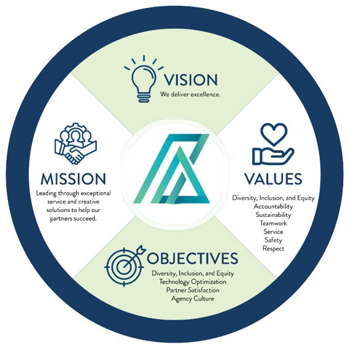

Our Story
Founded in 2014 by Mr. Lionel Peiris, APM ASSOCIATES began as a supplier of goods for public and private sectors. In 2021, Eng. M.U.R. Dharmawardane took full ownership and expanded it into engineering consultancy services for corporate clients.
Services We Offer
- Manufacturing Plant Installations
- Generators & Machinery Setup
- Design and Supervision of MEP Systems
- Statutory Compliance Engineering
Our Vision
We deliver excellence.
Message from the CEO

I am a Sri Lankan citizen born in 1961, graduated from the University of Moratuwa. My professional journey includes roles at Sri Lanka Export Development Board and Sri Lanka Ports Authority. I led major infrastructure upgrades and consulted on high-value procurement projects.
As Resident Manager of the Port of Trincomalee, I turned the port from a loss to a self-financing hub. Today, I lead APM ASSOCIATES to deliver expert engineering services to our clients across Sri Lanka.
– M.U.R. Dharmawardane, B.Sc. (Eng.), MIESL, MECSL, MIAESL